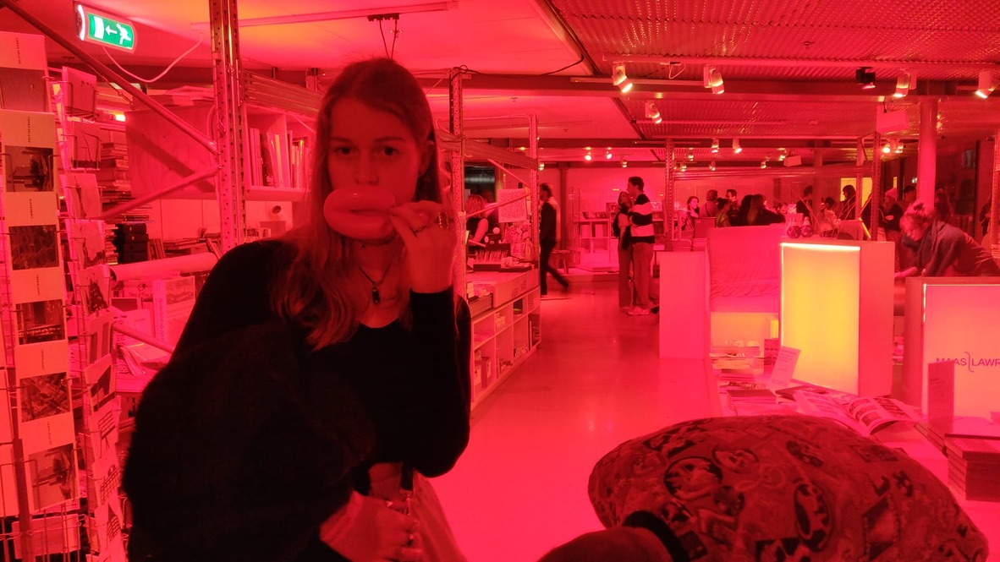
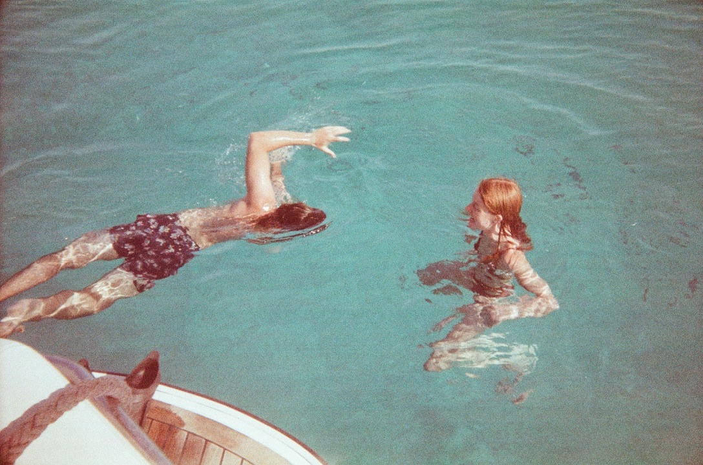
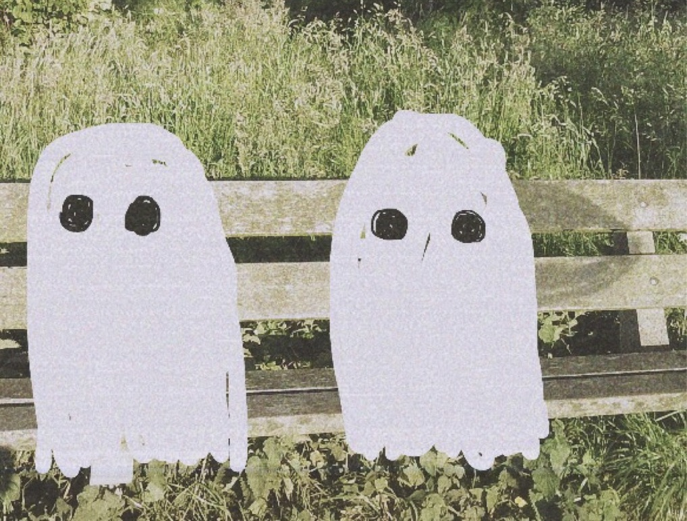
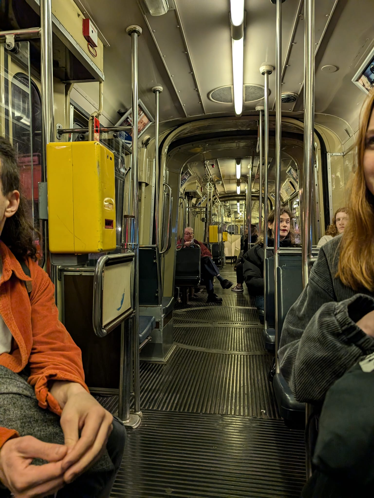
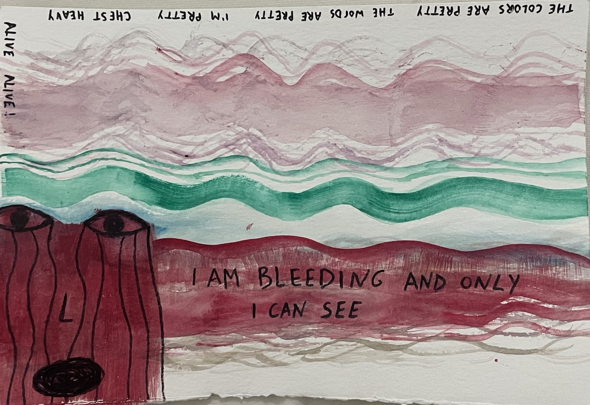
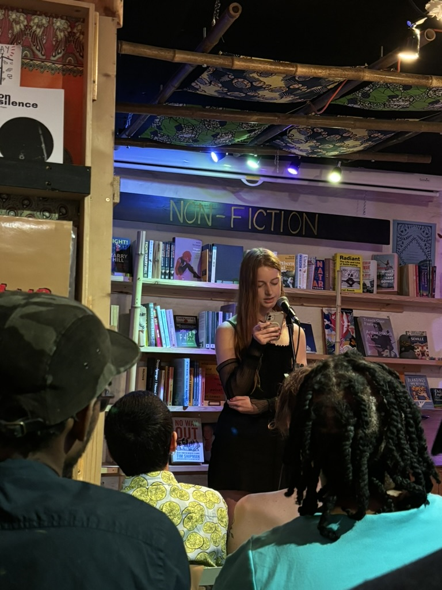
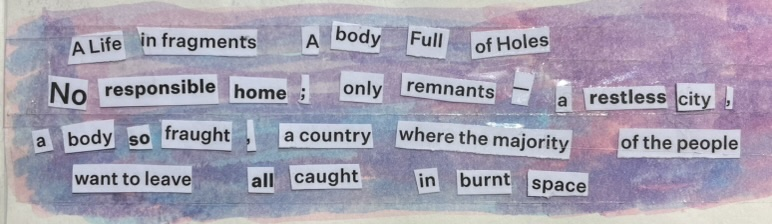
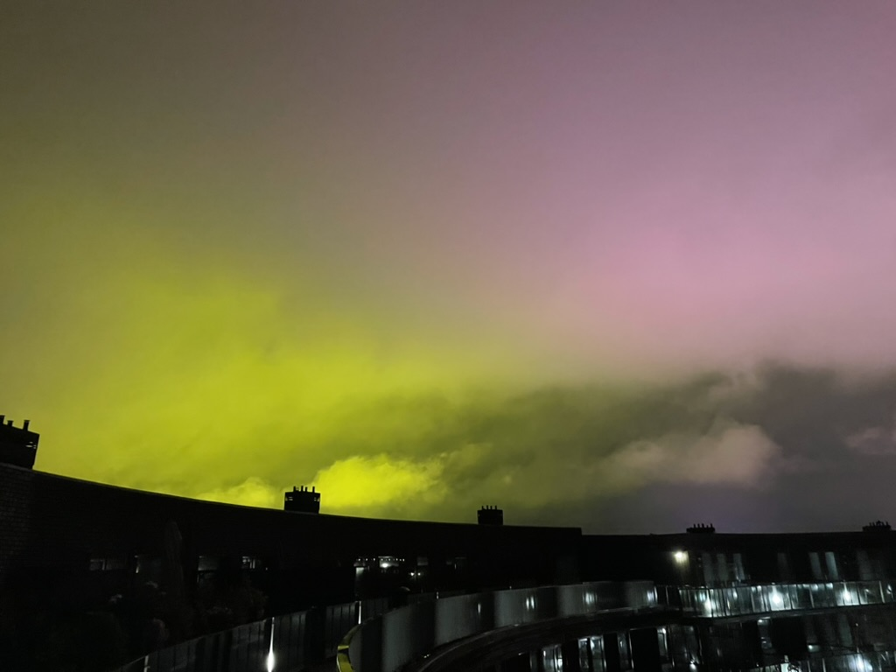

<div class="grid">
  <figure class="fig fig--kiss">
    
  </figure>
  <figure class="fig fig--shark">
    
  </figure>
  <figure class="fig fig--ghost">
    
  </figure>
  <figure class="fig fig--tram">
    
  </figure>
  <figure class="fig fig--wavy">
    
  </figure>
  <figure class="fig fig--sun">
    
  </figure>
  <figure class="fig fig--baby">
    
  </figure>
  <figure class="fig fig--fragment">
    
  </figure>
  <figure class="fig fig--sky">
    
  </figure>
  

</div>
